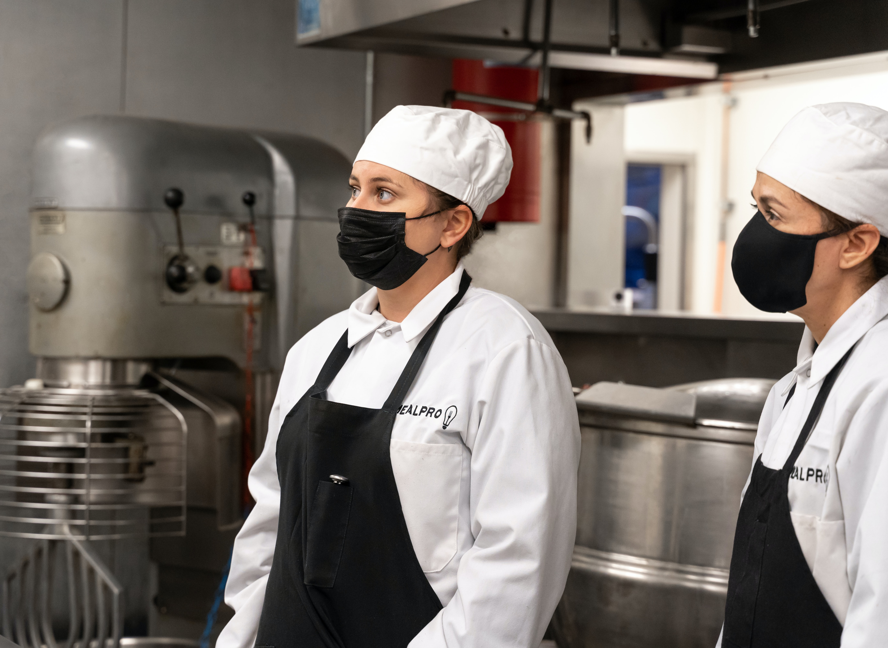

Global health crisis- Are food service businesses taking safety measures?
June 8, 2021 | By Rithika Kharey
The global health crisis caused by covid-19 has become the “new normal”. Since pandemic broke out, it has wrecked lives both economically and socially. If I count the sufferings world faced, I may forget the count. One such blow is being seen in foodservice industries. But with safety measures many have put the stake to the ground with most successfully carrying out their businesses despite the lockdown.
Toronto, on 8th of April witnessed a provincial lockdown when the cases took a toll relegating the US in Covid-19 cases per day. With many dining rooms closed and only take-away was the option.
“I don’t care going out, even if the virus is hovering in air. I wanna eat burger and have my iced-tea at Starbucks”, is no strangeness to hear nowadays. But what makes consumers to re-think is “What if the safety measures are unfit out there?” and just with this question in everyone’s mind and jab has made people back-off and stay home.

Safety Protocols
Who thought Masks and sanitizers could actually be a significant part of our lives? But global crisis did make us feel! So it is right to say they were and are the weapons most have used to keep ourselves protected from the deadly virus to a greater extent. According to restaurants Canada, 50% of the independent restaurants by fate are subjected to closure. Since the nature of the work is customer centric and hospitality focused, safety and hygiene has been made a priority. Remodelling the infrastructures according to the safety guidelines, kept many consumers and service provides at bay from the infection helping them extend their services easy as pie and generate revenue.
Change in work patterns
With global health crisis affecting the trade, it has successfully affected the business patterns too. With the provincial lockdown, the dining rooms of restaurants have been closed for 362 days since the pandemic. Many food-service businesses are still operating at a loss and others losing money of more than a year. To overcome this, many entrepreneurs have brought major changes to their enterprises- from shifting their businesses offline to online with many groceries being sold parallelly.
“Some businesses have had to reduce their capacity by a lot,” said Jasmin Guénette, CFIB vice-president of national affairs in Montreal. “And so, one way to adapt to that is to change some of the core parts of your business.”
Efficient safety training programmes
This has been an inevitable part for the folks in the service sector to keep their work going despite the crisis. “There’s a strong willingness among business owners to make sure that their place of business is safe for everybody,” said Guénette. “Their business is their life, so they don’t want to lose it. Because of this, many will take every step possible to make sure that their employees and clients remain safe, and send positive signals that they care.” According to the latest survey data from Restaurants Canada:
• 86% of Ontario’s restaurants are still operating at a loss or barely scraping by, now more than a year into the pandemic.• 7 out of 10 restaurant operators continuing to lose money expect they’ll need at least a year to return to profitability.
Support programmes
Restaurants Canada, (a national not-for-profit association) is continuing to call on the Ontario government to help the province’s foodservice businesses mitigate rising debt in the following ways:
• Further funding through the Ontario Small Business Support Grant program and an amendment to the rules to ensure every foodservice establishment is able to receive funding.
• A sector-specific program for covering reopening/closure costs such as wasted inventory, staffing costs, patio setup/takedown, etc.
• An expansion of the property tax and energy cost rebate programs to include all foodservice businesses that have been impacted by Red-Control level restrictions.
• An immediate end to the 6% markup that restaurants pay to buy alcohol from the LCBO.
How has pandemic played with minds?
Pandemic and sub-sequent lockdowns has taught us so much, be it healthcare, hygiene, safety measures, etc. When the guidelines and change in work routine started cutting in, employees as well employers gradually felt tormented, mentally. Thus, transparency and open communication has cut-off the rising employee-employer issues.
“It’s important to stay in touch regularly, to be honest and tell them what’s happening. If you can’t provide a position for them in the near future, or even in the far future, be honest about that,”Cindy Simpson said.
“There’s a lot you can do for a person as an owner or an operator,” she said. “Help and encourage (employees to) explore other options, or you can even use your connections or influence to get individual employees introduced to other people in or around the industry.”
So, even if it is a pandemic, a war or anything anti-social, Humans co-ordination is the best tool a nation can use to protect itself.